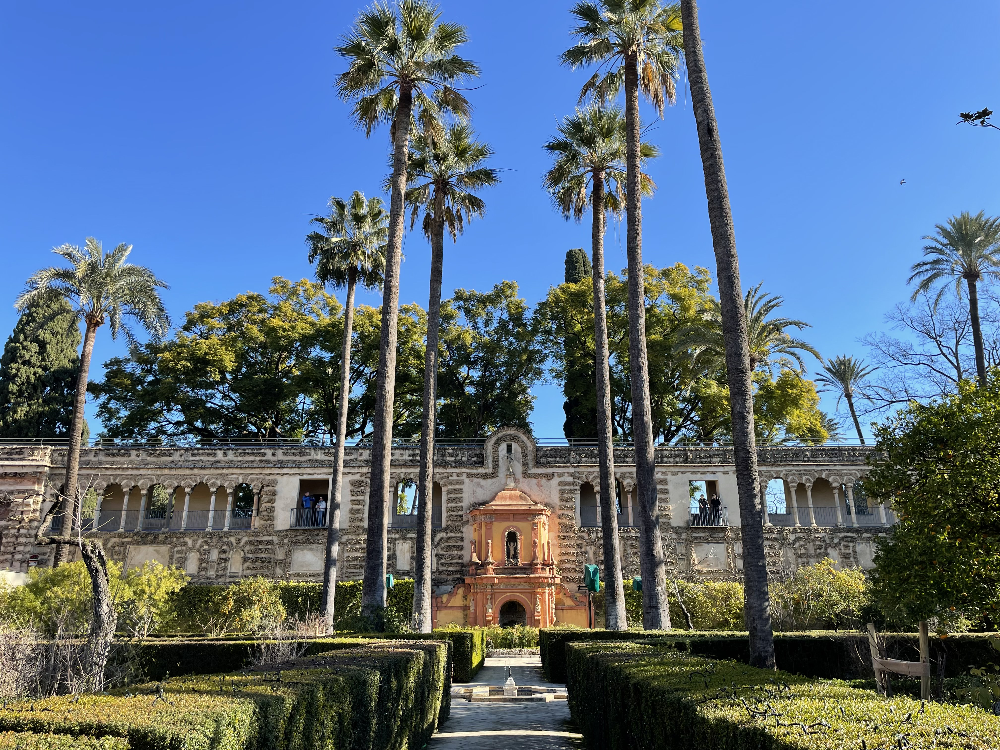
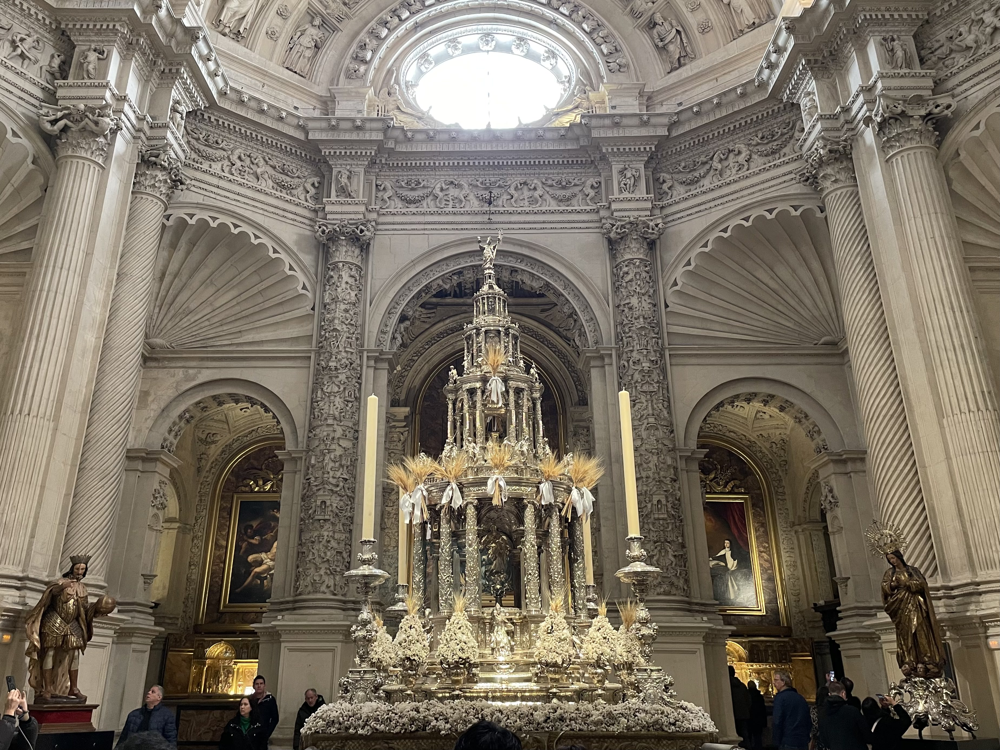
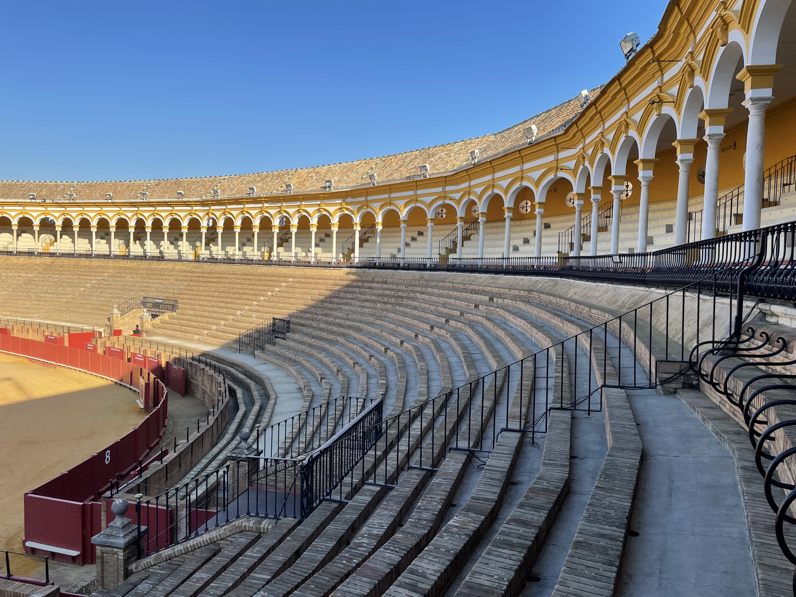
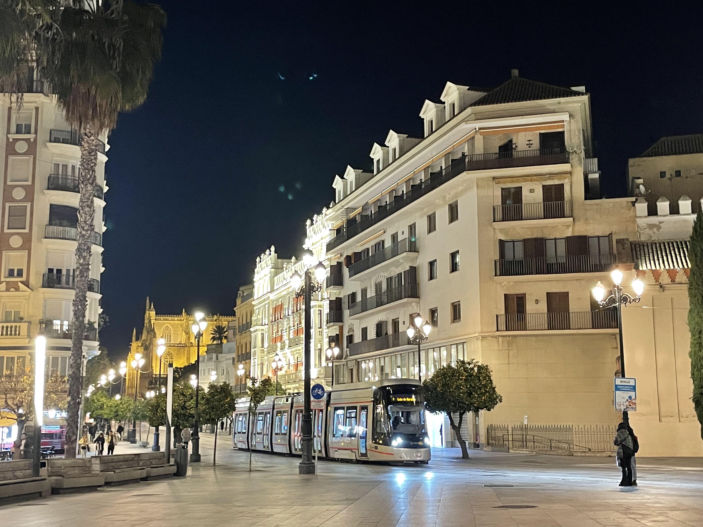

Seville, the second-largest city in Andalusia and the third most-visited destination in Spain, is home to over 2.2 million residents. As the warmest city in the country, it boasts an average temperature of 78 degrees fahrenheit. Some of its most iconic attractions include the Real Alcazar and Seville Cathedral --both UNESCO World Heritage Sites --along with the Bullfighting Museum and El Arenal.



